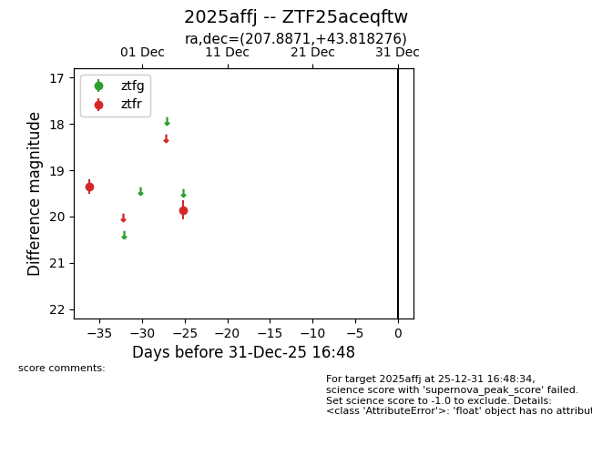
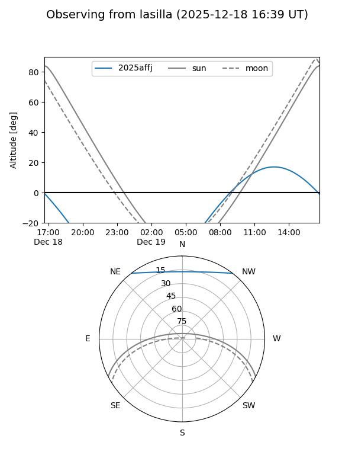
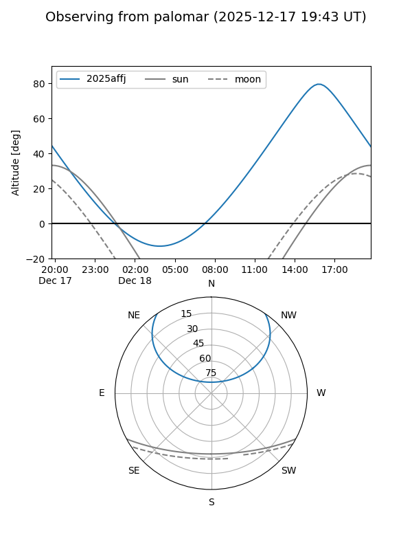

2025affj
Target 2025affj at 2025-12-18 11:17
Aliases and brokers:
FINK: fink-portal.org/ZTF25aceqftw
Lasair: lasair-ztf.lsst.ac.uk/objects/ZTF25aceqftw
ALeRCE: alerce.online/object/ZTF25aceqftw
TNS: wis-tns.org/object/2025affj
YSE: ziggy.ucolick.org/yse/transient_detail/2025affj
alt names
ZTF25aceqftw (ztf,fink_ztf)
2025affj (tns,yse)
Coordinates:
equatorial (ra, dec) = 207.8871,+43.81828
equatorial (HMS+DMS) = 13:51:32.91,+43:49:05.79
galactic (l, b) = (90.8498,+69.37584)
Photometry
last ztfr=19.86
2 ztfr detections
Lightcurve

Visibility


Additional plots